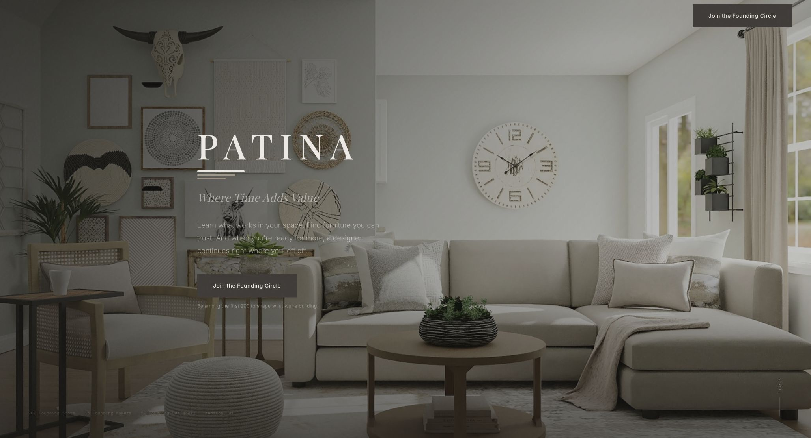
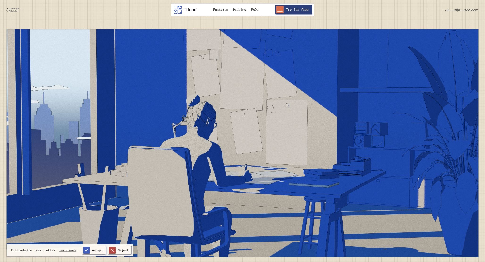

The living
study.
An invitation to look closer.
A new digital expression of
Where Time Adds Value.
Design direction & interactive mockups
Prepared for discussion / Version 03

Every room has
something to teach us.
Generated concept imagery
Make the
judgment visible.
Patina already has the right promise. The next website should let visitors feel it: notice the grain, understand a proportion, and see why a piece belongs in a room.
Begin with a room.
Give visitors something to explore, with a light introduction to the people behind it.
Reveal the reasoning.
Turn a beautiful image into a small, useful design lesson.
Continue with a person.
Make the designer handoff the natural next chapter.

A strong foundation.
The current site establishes warmth, craft, and the Founding Circle. The opportunity is to turn its promise into something visitors can explore.
Patina today · Reviewed September 7, 2026
A world of its own.
Illoca makes architecture tangible through a drafting environment, bold scale, and visual demonstrations. Its strongest lesson is how closely the experience fits the subject.
Illoca / Unseen · Visual referencePatina’s world
is a living room.
Translate the sense of discovery into light, material, proportion, and the notes a designer would share beside you.
Familiar warmth.
New presence.
Keep the identity’s material colors and Strata mark. Give photography more space, type more confidence, and every interaction a clear purpose.
One lived-in room. Natural light. Close views of grain and construction.
Quiet margins. Large, legible statements. Details revealed in context.
An eye for
what belongs.
Editorial voiceManrope
Reading & wayfinding
#FAF7F2
#EDE9E4
#A3927C
#655B52
#3F3B37
#4F5948
Olive is a proposed accent for the editorial chapters. “Where Time Adds Value” remains the brand signature. “The living study” is the internal name for this design direction.
Let the story
run through it.
The homepage gives people space to look, touch, and explore. Small notes reveal the people behind the choices. The full founder story is there when someone wants to step into it.
- Warmer and more lived-in.
A real-feeling worktable, tactile samples, hands at the bench, and quieter margins. The visual world now extends beyond one finished room.
- Part of the creative process.
Kody’s reason for building becomes an interaction principle: tools should feel like they belong in the making. Visitors can move, compare, and discover.
- A story of its own.
“Our story” holds Leah’s perspective and Kody’s motivation. The homepage carries hints and invitations, with no full founder biography at the front.
A place to explore.
A story woven in.
More room, more material, more making. Founder notes appear lightly along the way. “Our story” opens a dedicated view with Leah and Kody’s perspectives.
A lighter founder presence.
A short note near the room, Kody’s belief beside the material table, and a small invitation to meet the founders. Their full story lives in its own view.
Motion with something to do.
The room reframes, the material samples move, and the workshop image shifts gently with the scroll. “Motion off” keeps the exploration still.
More of the making.
New workshop and worktable images bring grain, hands, sketches, and textiles into the experience. Real maker photography will replace these studies.
From a room.
To a detail.
To a conversation.
The same room carries the story across the page. Each closer view adds understanding, then leads to the person who can take the project further.
See the whole.
Start with light, balance, and the feeling of a room. A quiet invitation makes the points of interest easy to find.
Notice the choice.
Selecting a piece gently reframes the image. A short designer note explains its shape, material, or relationship to the room.
A place to begin.
Your room, ready for a conversation.
Bring it to a person.
Show the planned handoff as a simple briefing. Explain what will carry forward and keep future functionality explicitly labeled.
Motion directionOne deliberate reframe, triggered by a selection. The prototype demonstrates the image crop; production can add a short room-to-detail dissolve. Touch uses the same controls. Reduced motion uses an immediate change.
The human storyThe briefing above is a future-state concept. This website’s live conversion remains the Founding Circle or a designer application.
Try the room study againThe piece
has a past.
And a future.
Carry the room’s visual language into stories about materials and makers. Pair a close view with the details that help someone choose well.
Proposed story anatomy: material → construction → care → the person who made it. Publish maker identities and provenance only after verification.
Illustrative material storyMade to
be lived with.
Grain you can follow. Edges softened by use. Explore what gives a material its character, and how to care for it over time.
Walnut / material study
Final specifications to be verified
A proposed material-story page, not a purchasable product listing. Commission matching close-ups and real maker photography for launch.
One sensibility.
Two invitations.
Homeowners find a designer’s eye within reach. Working designers see their expertise as the foundation of Patina.
A home,
gathered
over time.
A designer’s eye for furniture that belongs.
A small beginning, with Leah & Kody.
The open frame keeps the sightline through the room. A substantial chair can still feel light.
First access when the app launches.
On a phone, notes sit below the image and the invitation stays easy to reach. The working homepage mockup also adapts to a narrow screen.
Your expertise belongs here.
The designer surface keeps Patina’s dark theme and speaks to a peer: help shape the work, bring your judgment, and receive credit for it.
You have the eye.
Help shape
what comes next.
Built by a designer, for designers. Join the Founding 50 to help shape how Patina understands a room, a material, and a well-made piece.
Trade: Apply to the Founding 50.
Consumer: Join the Founding Circle.
Maker recruitment keeps Apply to Partner on its own surface.
Build the story.
Then the site.
The craft comes from the content as much as the code. Begin with one convincing room, then extend the language across Patina.
Make it real.
Choose a room with Leah. Commission a room photograph, material close-ups, and maker portraits. Verify provenance and write the designer notes together.
Review gate: approve the art direction and content. Concept imagery is replaced with documented work.
Prove the experience.
Build one responsive room study. Ask five homeowners and three working designers to explain Patina, explore a detail, and find their next step.
Review gate: people understand the offer, discover the interaction, and know the product is pre-launch.
Carry it through.
Apply the system to home, materials, and designers. Reuse the existing Founding Circle and application flows, attribution, and consent controls in Next.js.
Review gate: content approval, accessibility, responsive QA, and performance before release.
Native scroll, visible focus, labeled controls, readable text, 44px touch targets, and a still version of every motion sequence. No information available only on hover.
Responsive images first. No required video or 3D engine. Proposed mobile targets: LCP ≤ 2.5s, INP ≤ 200ms, CLS ≤ 0.1. Validate during implementation.
Compare Founding Circle completion with the current baseline. Use consented CTA and content engagement events to learn whether the room study helps. Targets are proposals, not results.
The details
only you know.
Kody’s motivation now has a clear place in Our story. The next layer can come from a real moment in Leah’s work, a conversation between the founders, or something from the process we can show.
Editorial working notes, outside the proposed website. The kitchen-table scene in an older concept is unconfirmed. No invented memories, founder portraits, or attributed quotes have been added.
- The moment it became personal.
- What happened with a client, a room, or a piece of furniture that made Leah think: this should be easier? Keep the small, specific details.
- Why you chose to build it together.
- Kody’s starting point is confirmed: the tools feel sterile and outside the creative process. A specific example of that gap would make this even more personal.
- Something from the actual work.
- A candid photograph together, an annotated selection, or an early prototype. Use a real artifact and tell us what we’re looking at.
- An invitation you would say aloud.
- What would you say to someone sitting with you who cares about their home but doesn’t know where to start?
What feels
like us?
Respond to the direction before we refine individual screens. The most useful feedback is what feels true to Patina, what feels too far, and what you need to see next.
This is a local review worksheet. Nothing is sent. Save your response as a file to share with the team.
Sources, imagery & what this proposal includes
Design references
- Illoca by Unseen — direct visual review, September 7, 2026.
- Current Patina website — direct visual review, September 7, 2026.
- Patina Messaging System v1.0 (July 10, 2026) — positioning, exact CTA labels, brand facts, and pre-launch language.
- Repository AGENTS.md — existing palette and architecture.
Reference screenshots are included for comparison. Illoca’s artwork and interface are not reused in the proposed Patina screens.
Concept scope & credits
Founder facts come from the Patina Messaging System v1.0. The Leah letter excerpt comes from src/lib/emails/founding-welcome.ts. Surrounding first-person copy is proposed language for founder review, not a transcript. Kody’s motivation is grounded in his September 9 feedback: existing tools feel sterile and disconnected from the creative process. Documentary founder photography and more specific origin memories remain to be developed together.
The room image was generated for this presentation. It does not document a real Patina product, maker, room, or designer project. All furniture descriptions and room notes are illustrative. Material swatches are abstract CSS studies.
Libre Caslon Display and Manrope: Google Fonts / SIL Open Font License. Fonts and images are embedded in the portable edition. The proposed wordmark is a typographic study; final production should use approved brand artwork. Round 03 adds generated workshop and material-table imagery; neither depicts a real Patina maker, founder, or project.
This proposal includes responsive HTML mockups and working room controls. It does not implement product purchasing, room scanning, designer matching, or production signups. Existing live forms remain the intended integration points.